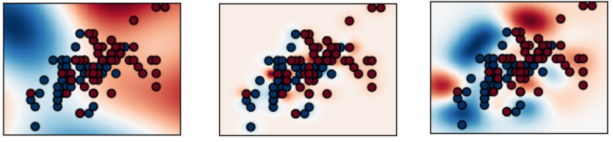

Q: Wat is een SVM ?
A: Een SVM is een supervised ML algoritme dat zowel voor classificatie als regressie gebruikt kan worden. Classificatie gebeurt door het vinden van een hyper-plane die een optimale scheiding maakt tussen twee verschillende klasses. Het is een large margin classifier die de marche tss twee klasses zo groot mogelijk maakt bij bepalen van de scheidingslijn tss de klasses.
We kijken naar punten die dichtst bij elkaar liggen en daar proberen een scheidingslijn te kiezen die zover mogelijk van beide verwijderd is.
Q: Hoe classicifeert een SVM ?
A: Gebruik volgende stappen :
- Zoek scheidingslijnen die de trainingset zo goed mogelijk scheiden
- Kies de scheidingslijn die de grootste afstand (margin) heeft tot de punten die er het dichtst bij gelegen zijn.
- De dichtstbij gelegen punten noemen we de support vectors
- SVM = Large margin classifier
Q: Wat als de perfecte lineaire scheiding niet mogelijk is bij een SVM ?
A: Antwoord: Werken met een regularisatie parameter C
Afweging tussen correcte classificatie op training set en een grote marge tussen de klasses (large margin).
- Grote C-waarde: constraints zijn moeilijk te negeren ⇒ smalle marge ⇒ zo min mogelijk classifier fouten
- Kleine C-waarde: constraints kunnen makkelijker genegeerd worden ⇒ brede marge
Q: Wat bij niet-lineair scheidbare gegevens bij een SVM ?
A: Oplossing: transformeer de data naar een hogere dimensie gevolgd door lineaire scheiding of Projecteer de data in een hogere dimenensie en probeer lineair te scheiden (met een kernel)
Q: Welke kernels kan je gebruiken bij een SVM ?
A: Meest gebruikte kernels:
- RBF - Radial Basis Function (Gaussiaanse kernel)
- Polynomial kernel
- Histogram kernel
- Lineaire kernel = SVM zonder kernel
Q: Wat doet de parameter gamma bij een SVM en hoe zie je het effect ervan ?
A: Parameter gamma regelt de breedte van de RBF kernels
- Kleine gamma ⇒ brede RBF kernels. Te kleine gamma leidt ertoe dat het model de complexiteit van het model niet kan capteren (underfitting) (eenvoudiger model)
- Grote gamma ⇒ smalle RBF kernels. Te grote gamma leidt tot overfitting Bij gebruik van een RBF kernel: feature scaling (= normalisatie) toepassen (complexer model)
Q: Wat mag je zeker niet vergeten bij SVM als je RBF-kernels gebruikt ?
A: feature scaling is toepassen ! de RBF-kernels zijn rond en als de features op verschillende schalen staan heb je elipsvormige kernels nodig.
Q: Waarom zou je een SVM verkiezen ? Wat zijn de mogelijke nadelen ?
A: - Kan zowel gebruikt worden voor regressie als classificatie (en zelfs clustering)
Bij classificatie kan je wel niet opvragen hoe zeker het model is van keuze classificatie !
- Werkt goed op kleine datasets (in tegenstelling tot neurale netwerken en deeplearning)
- Is nog altijd effectief wanneer het aantal features groter is dan het aantal training samples
- Het werkt goed bij een groot aantal features (high dimensional space)
- Gebruikt niet alle training examples tijdens training ⇒ geheugenefficiënt
- Geen lokale minima/optima, maar globaal optimum
- Gevoelig voor uitschieters zeker als ze in de buurt komen van de scheidingslijn want dan wordt uitschieter deel van supportvector en wordt scheidingslijn aangepast. Als je de marge echter groter neemt dan heeft uitschieter mindern een invloed op de scheidingslijn.
Nadeel : als je veel kernels hebt, heb je veel rekenkracht nodig.
Q: Wanneer zou je SVM gebruiken en wanneer Logistic Regression ?
A: Wanneer welke classifier kiezen?
- Wanneer het aantal features groot is ten opzichte van het aantal training samples: gebruik logistic regression of SVM zonder kernel (= lineaire kernel)
- Wanneer het aantal features klein is en het aantal training samples behoorlijk: gebruik SVM met RBF kernel
- Bij een klein aantal features met een groot aantal training samples: creëer meer features en gebruik logistic regression of SVM zonder kernel (= lineaire kernel)
Q: Als je valdatie wil gebruiken om je model te trainen, hoe splits je je data dan op ? Wat zijn de voor/nadelen als je je data in andere verhoudingen opsplitst ?
A: Je splitst je data op in :
- Training data: om model mee te trainen
- Validation data: tuning van hyper parameters en model selection
- Test data: uiteindelijke test van het best gevalideerde model op nog nooit geziene data
Bij het trainen splits je je data op in validatiedata en trainingsdata. Als je veel trainingsdata kiest (en dus minder validatiedata) dan is het beter getraind maar is de validatie minder betrouwbaar. Omgekeerd is het model minder goed getraind/slechtere accuracy maar wel beter gevalideert.
Q: Welke classifier zou je verkiezen ? Bespreek
A: Bespreking :
- Beide scheiden de training data perfect
- Het gaat er niet om welke er best presteert op de training data, maar wel op de test data
- De rechtse classifier is meer robuust
Q: Een support vector machine werd 3 keer getraind met een RBF kernel, telkens met verschillende gamma waarden. De C-waarde was telkens hetzelfde. Rangschik de onderstaande plots (A, B, C) van kleine gamma waarde naar grote gamma waarde.

A: A < C < B